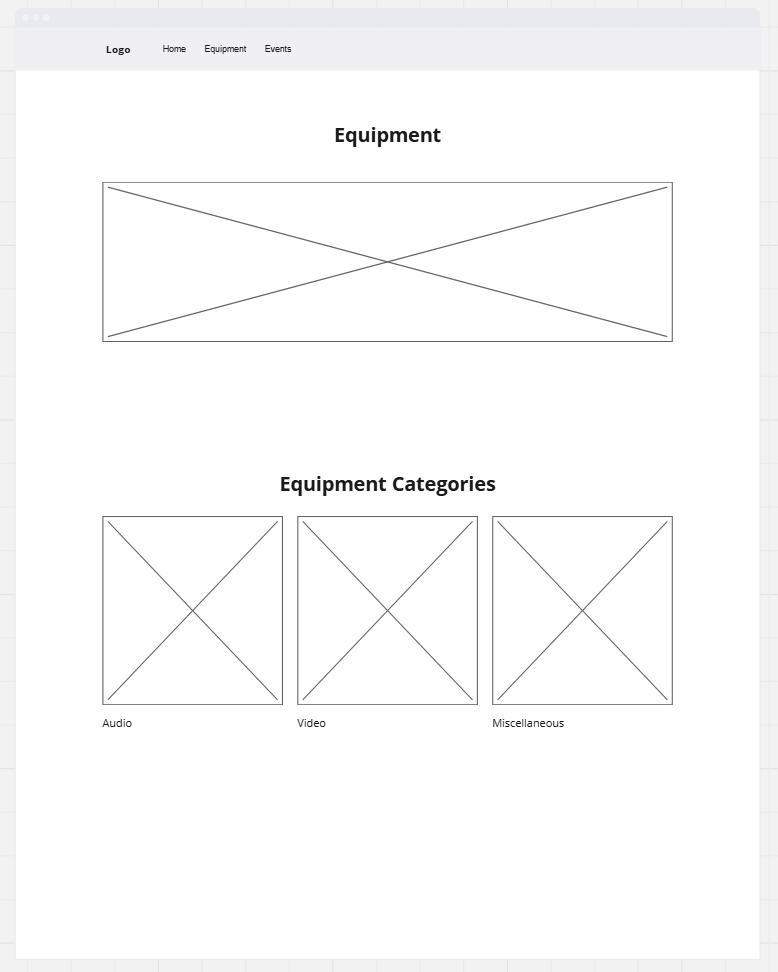
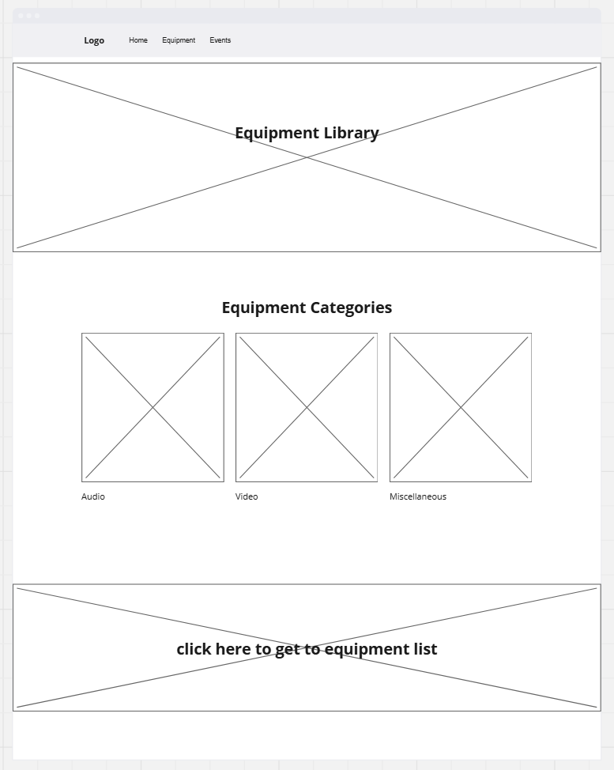
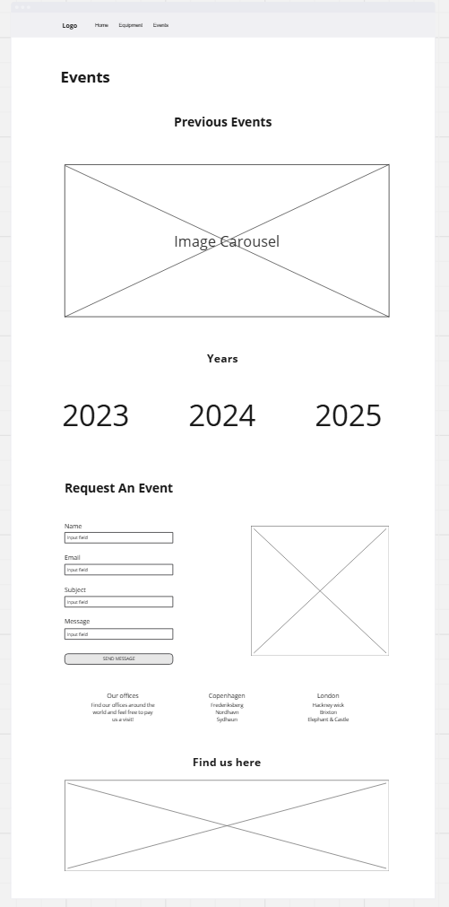

Wireframes
Questions
What are the advantages and disadvantages of sketching wireframes over wireframe software?
Sketching a wireframe is great because it can be done quickly, right then and there as long as you have a writing utensil and something to write on. However, if you need to duplicate it or share with the workplace or peers, it becomes a challenge to use, and can be quite a hassel.
Which type of wireframing style would work best with your project?
My semester project would probably be easiest if sketched out because only I realy need to see it, I can do it in pencil so I can adjust and erase if necessary and I don't have to have it pulled up on another screen or tab to see it The sketch can just sit on my desk or wherever I'm choosing to work on the project.
Images of Wireframes


